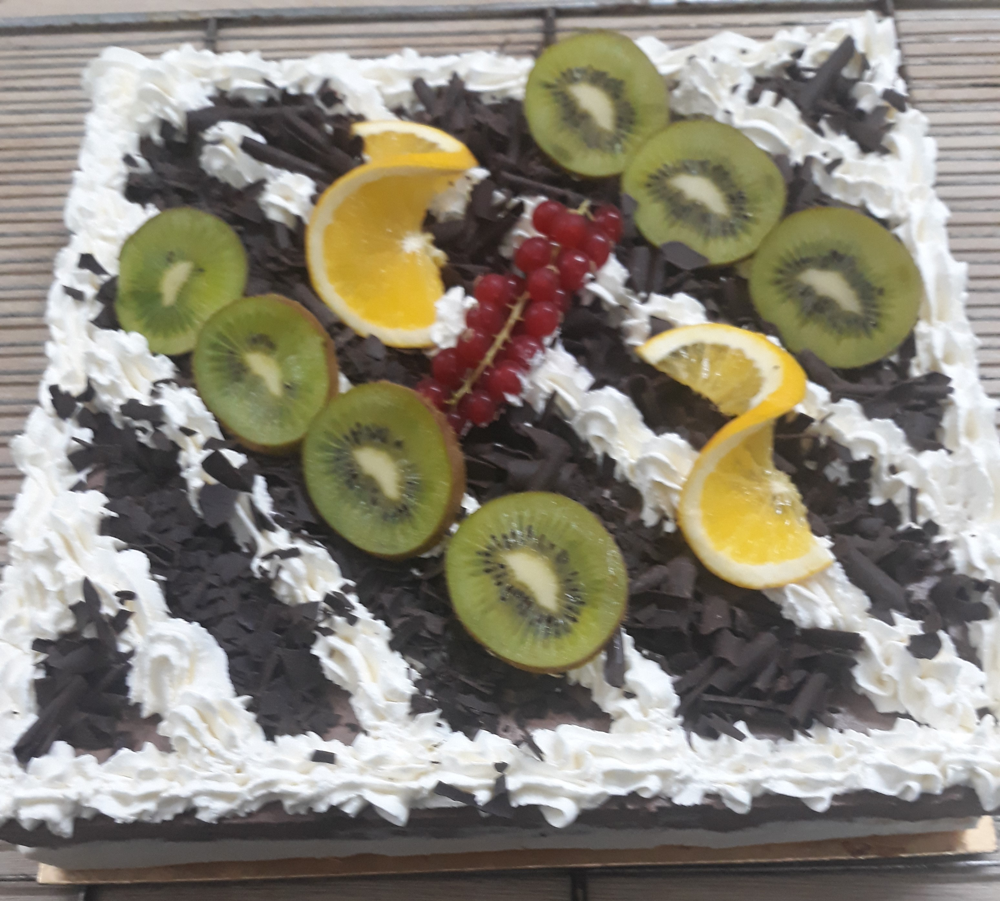
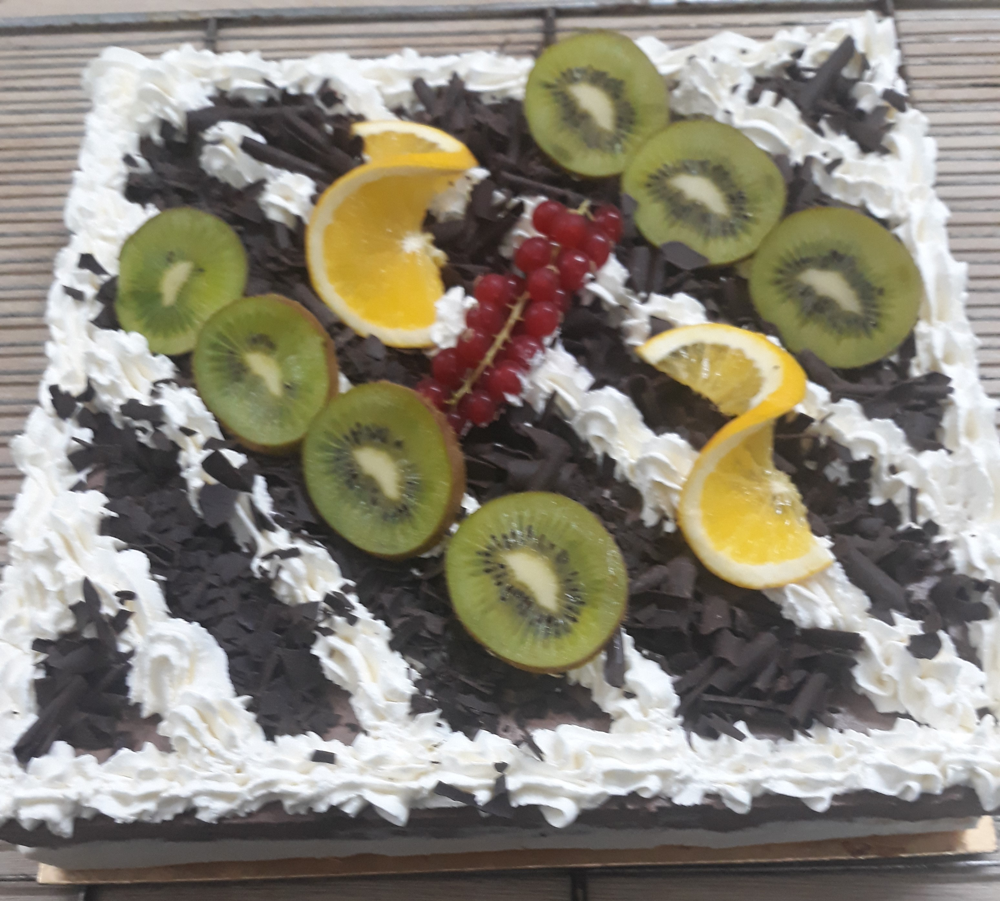
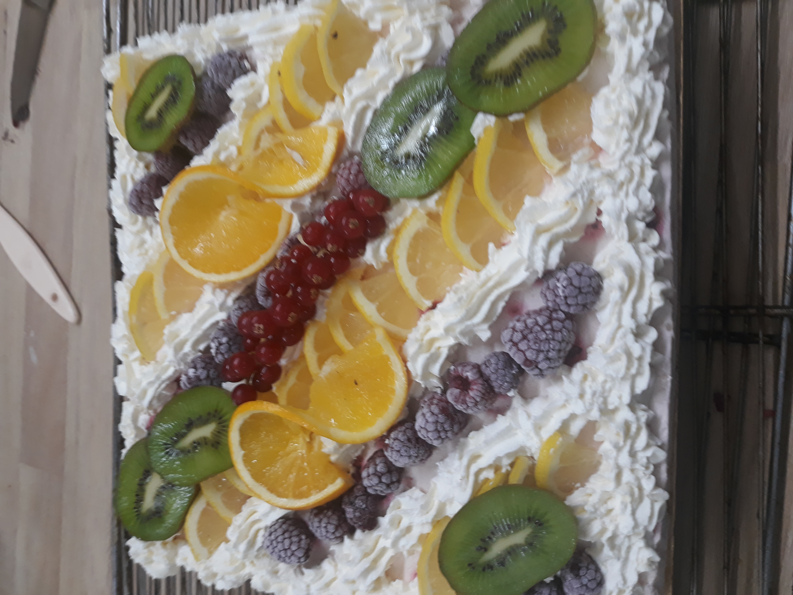
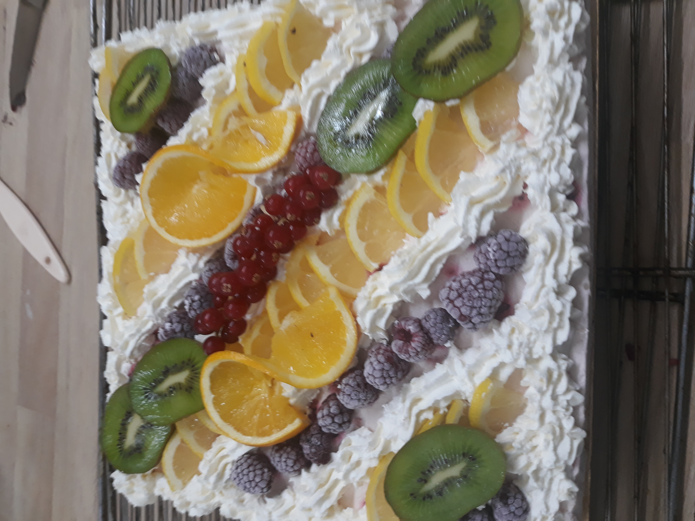

LES GATEAUX
Mille-Feuille
Découvrez l'élégance du mille-feuille : des couches croustillantes de pâte feuilletée rencontrent une crème pâtissière onctueuse. Une expérience gourmande inégalée, alliant tradition française et savoir-faire artisanal.
La part : 1.40 €
Saint-Honoré
Découvrez l'apogée de la pâtisserie française avec notre Saint-Honoré exquis. Cette création allie la légèreté d'une base de pâte feuilletée caramélisée, la richesse d'une crème chantilly aérienne, et la perfection des choux garnis.
La part : 1.40 €
 

Foret-Noire
Découvrez l'élégance gourmande de notre Forêt Noire artisanale. Entre des couches de génoise chocolat légère, une crème fouettée aérienne, et des cerises amaréna juteuses, chaque bouchée est une escapade sucrée. Notre Forêt Noire, ornée de copeaux de chocolat noir, incarne la perfection du mariage entre le chocolat et les fruits.
La part : 1.40 €
Fraisier
Découvrez l'élégance sucrée de notre Fraisier, une délicate harmonie entre la fraîcheur des fraises et la douceur de la crème mousseline. Chaque tranche révèle un spectacle de couches légères, de fraises gorgées de soleil, le tout couronné d'une génoise moelleuse.
La part : 1.40 €
Tropéziènne
Plongez dans le luxe sucré avec notre Tarte Tropézienne. Une base moelleuse de brioche légèrement sucrée, enveloppée d'une généreuse couche de crème mousseline vanillée. Chaque bouchée est une escapade gourmande sur la Côte d'Azur, où la simplicité rencontre l'opulence.
La part : 1.40 €
Moka
Découvrez l'élégance gourmande de notre Moka, une symphonie alliant génoise et crème au beurre (café, chocolat, grand-marnier, vanille, praliné).
La part : 1.40 €
Croustade Pomme
Succombez à la gourmandise avec notre Croustade aux Pommes, une création croustillante qui célèbre le mariage parfait entre des pommes fondantes et une pâte feuilletée dorée.
La part : 0.90 €
Pruneaux-Armagnac
Succombez à l'harmonie sucrée de notre bavaroise pruneaux surmonté d'une bavaroise à l'armagnac, une création délicate où la fraîcheur rencontre la finesse d'une bavaroise onctueuse.
La part : 1.40 €
Bavaroise Poire-Chocolat
Succombez à l'harmonie sucrée de notre bavaroise chocolat noir, une création délicate où la fraîcheur des poires rencontre la finesse d'une bavaroise chocolat onctueuse. Pour couronner cette expérience, un craquant praliné chocolat au lait apporte la touche parfaite de croquant.
La part : 1.40 €

Bavaroise Tiramissu
Plongez dans l'Italie avec notre Tiramisu exquis. Des couches de biscuits imbibés de café, de mascarpone crémeux et saupoudrées de cacao, créent une symphonie de saveurs et de textures.
La part : 1.40
Bavaroise-Mandarine craquant
Succombez à l'harmonie sucrée de notre bavaroise à la mandarine, une création délicate où la fraîcheur des mandarines rencontre la finesse d'une bavaroise onctueuse. Pour couronner cette expérience, un craquant praliné chocolat au lait apporte la touche parfaite de croquant.
La part : 1.40 €
 

Bavaroise-Framboise
Succombez à l'harmonie sucrée de notre bavaroise à la framboise, une création délicate où la fraîcheur des framboise rencontre la finesse d'une bavaroise onctueuse.
La part : 1.40 €
Bavaroise-Fraise
Succombez à l'harmonie sucrée de notre bavaroise à la fraise, une création délicate où la fraîcheur des fraises rencontre la finesse d'une bavaroise onctueuse.
Le décors du dessus ne sera disponible qu'a la saison des fraises.
La part : 1.40 €
Bavaroise 3 chocolats
Succombez à l'harmonie sucrée de notre bavaroise au cocolat au lait et chocolat blanc. Pour couronner cette expérience, un craquant praliné chocolat au lait apporte la touche parfaite de croquant.
La part : 1.40 €